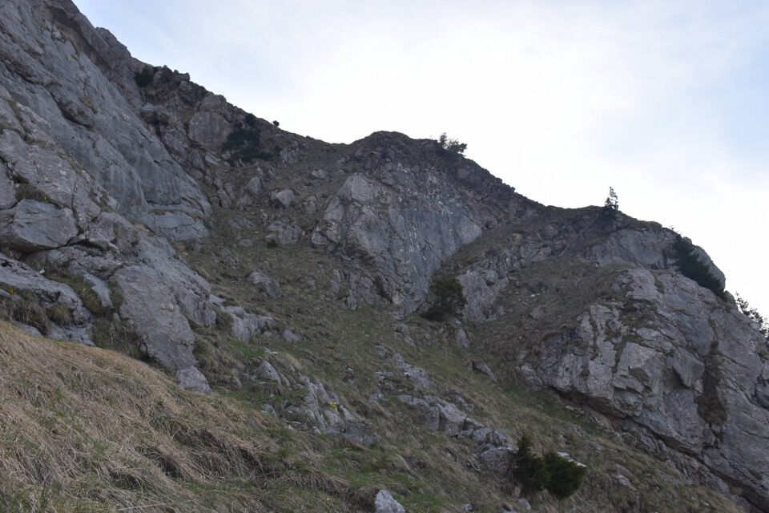

La Creta di Pricòt, il M. Cavallo di Pontebba e tutti i monti vicini non mi hanno mai detto nulla, e anzi dopo esserci salito non posso che confermare il mio giudizio. Però un mese prima, da Le Piche e i Falcons mi aveva incuriosito osservare una stretta cengia erbosa sul versante Sud della Creta di Pricòt, con tanto di un misterioso taglio di mughi. Sembrava inoltre scontata la possibilità di salire in cima lungo l'erboso versante Sud.
Così quel giorno appena tornato a casa sono andato a cercare informazioni sulla guida del Gaberscik, ed ecco qui: 1536 bis. Creta di Pricòt m 2233 CTR, dal Sud.
Leggo con grande sorpresa che l'itinerario è descritto nel libro Sentieri Selvaggi di Mazzilis! Inorridisco quando leggo possibile segnavia rosso.
Dopo esserci stato, devo ammettere di non aver percorso (involontariamente) neppure un metro della via descritta da Mazzilis! Il mio itinerario, inquadrabile nel 1536 ter del Gaberscik, è peraltro più semplice della via da lui descritta.
{kind=link}
{kind=link}
In quattro e quattr'otto eccomi all'amena conca di Pricòt.

La visuale verso le Picche di Glèris è magnifica.

Ecco la Creta di Pricòt.
Malga Glaçât con il vallone di Gleris: visione da sogno!

Le selvagge pareti Nord del Cozarèl e del Çuc dal Bôr.
Dalla sella (Prihat-Sattel?) a Nord del M. Pricòt seguo il sentiero che porta alla base delle pareti, ci sono pure i vecchi segnavia di Mazzilis.
Ecco l'inizio della larga cengia erbosa Sud.
In realtà credo che la via descritta da Mazzilis salga per quella ripida rampa erbosa a dx: involontariamente non ho percorso neppure un metro della sua via!

L'ambiente è bellissimo.

Mazzilis ha proprio scelto bene il nome «Via dei Camosci», ne ho visti a decine e decine tutto il tempo, su e giù, a destra e sinistra, insomma da tutte le parti!


Comunque seguo la cengia, sempre molto bella e agevole, fino a trovare un punto dove salire verso l'alto senza difficoltà.
Ecco, con «senza difficoltà» intendo non le solite comode scorciatoie dei camosci!


Con questa ripida rampa salgo ai pendii superiori.
Inizio a salire verso dx.
Mi stufo, ed essendo troppo belle le placche ad una certa vado su camminando fra spiazzi d'erba.


Ecco la fascia di rocce finali che difendono la cresta.

Andando un po' a sx trovo un canale camminabile che senza difficoltà alcuna mi porta dritto in cima.

Ero un po' scettico sui tempi indicati da Mazzilis, dato che è spesso ottimista sulle tempistiche. Lui dice quattro ore, d'altronde sono 1550m di dislivello, alla fine ci ho messo solo tre ore! Non so cosa mi prenda quelle poche volte che vado da solo...

Dalla cima della Creta di Pricòt verso il vallone Winkel.
Indeciso se scendere ad Est o ad Ovest, decido di andare sul vicino M. Cavallo di Pontebba e scendere ad Ovest.

Mi è inspiegabile l'assenza di un sentiero che dalla sella fra M. Cavallo e Creta di Pricòtič scenda a Sud: possibile che uno debba scendere a Nord alla Sella di Aip per poi risalire 100m fino alla Forca dai Claps?
Sono indeciso se scendere direttamente dal vallone fra le due cime oppure se traversare la Creta di Pricòtič: inizio a salire quest'ultima quando vedo dei camosci scendere nel vallone, e allora cambio di programma, via giù.

Resti di filo spinato nel vallone.

A dx il vallone da cui sono sceso (itinerario n.1539 del Gaberscik), a sx la Forca dai Claps.
Il vallone non oppone assolutamente alcuna difficoltà.
Per abbreviare sono sceso lungo la traccia nera che costeggia il rio Pricòtič, sentiero molto bello e ben marcato lungo il costone inferiore, ma nella parte alta (nel vallone di Pricòtič) non ho trovato quasi nessuna traccia e la cosa mi aveva preoccupato.
Meglio percorrerlo in salita (bella scoperta...).